There are three infallible ways of pleasing an author, and the three form a rising scale of compliment: 1, To tell him you have read one of his books; 2, To tell him you have read all of his books; 3, To ask him to let you read the manuscripts of his forthcoming book. No. 1 admits you to his respect; no. 2 admits you to his admiration; No. 3 carries you clear into his heart.
I can’t give you a magic recipe for academic writing but I can describe my own practice, and share with you examples of what worked for me and what didn’t. I’ll illustrate this essay with examples from my own papers. So I’m not slagging off anybody’s work but my own. I take responsibility for all errors pointed out below, including when the paper was written in collaboration.
What should the introduction achieve?
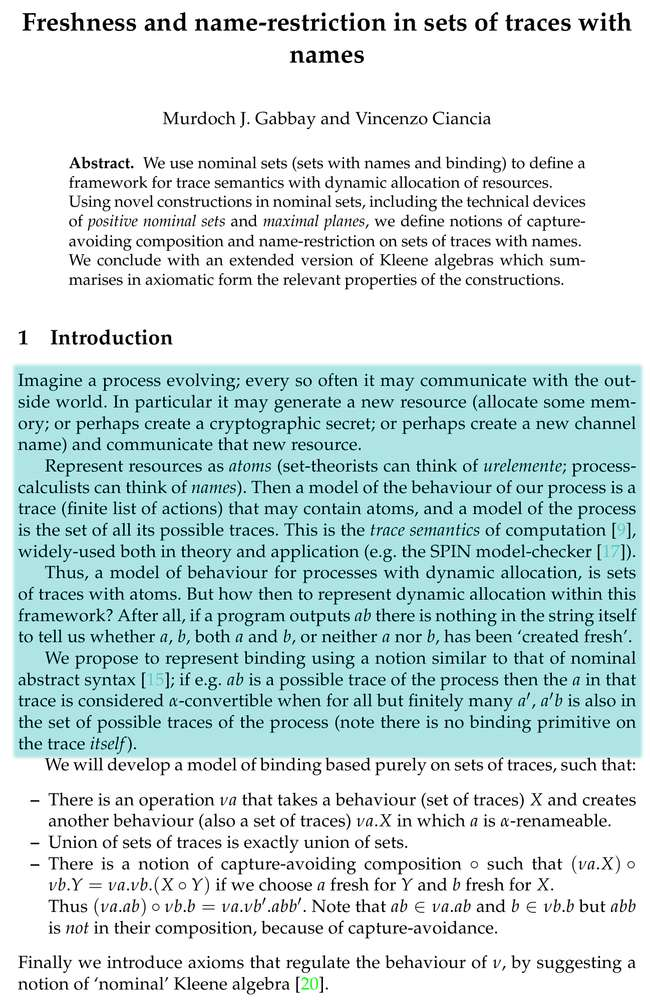
The first duty of the introduction is not to excite, fascinate, inspire, and engage the reader—that is its second duty.
The first duty of the introduction is to give the reader an idea to latch on to.
The reader will approach your paper asking three simple questions, which you must answer as well as you can:
- What this paper is about?
- Why the author is doing it?
- How does it make the world better?
I had this in mind when I wrote the introduction to the illustrated paper. Check out the four paragraphs highlighted (click to open in a new window).
If your introduction enables your reader to understand and remember pithy and compelling answers to these questions, then your introduction has done its job—and you’re half-way to getting published.
Let’s say that again
Let me say this again. To illustrate my point let me give you an example of two ways of describing a window:
- A window is a workably hard and tough amorphous crystalline sillicon oxide plane which combines high light transmissivity with relatively low thermal and sonic transmissivity.
- A window is a transparent building material. You can put it in the wall, see through it, and it keeps the weather out almost as well as brick.
I see (and write) too many introductions like sample 1 above. It’s not because authors are stupid: if you spent three years inventing something, you may lose perspective on your work.
Note the last bit of sample 2 above. This addresses the "how does it make the world better?"
part of Test 1
above. Ideally, you need your introduction to make it clear, in a non-threatening way, how your
paper advances the state of the art. Yes, this can be hard. That’s why talking with people is so
very important. You learn how to … well … communicate.
An example of a poor introduction
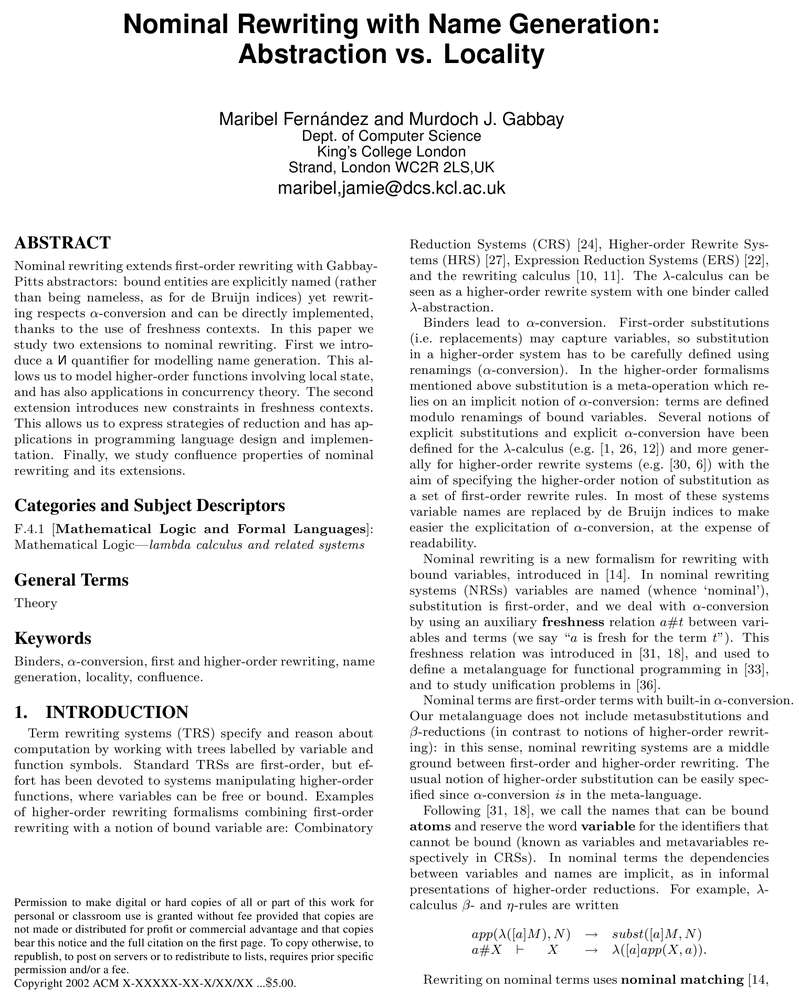
Here’s one of my poorer introductions (since the paper is co-authored, let me repeat that I take responsibility for it). See how I failed to express what the paper is about, what makes it special, and so on and so forth.
It got published, but I just got lucky; I didn’t make it easy for the referees.
The good example was published in 2011, the lemon was published in 2005. I’ve got better! I wouldn’t have written the illustrated text, today, because I’d have applied the test above and seen that it fails.
I keep writing a lemon
If you can’t get the introduction right, then that’s the text trying to tell me something. You just need to be sensitive and understand what it’s trying to say. Here are some possibilities I consider:
I know the material is important and all the maths is there for good reasons, but I can’t express what those reasons are — certainly not pithily.
Solution: You don’t fully get the big picture. Find a co-author and/or talk to new people.
This will give you fresh points of view. If you’re lucky, somebody will ask three simple questions
and then say "Ah, so the word for what you’re doing is this"
, or "Ah, so what you’re really doing is this"
, and suddenly you’ll see the
big picture.
Buy this person a drink. First, because they’ve just done you a huge service; second because they’re likely to do it again. Treasure them.
I’ve lost control of the shape of the maths. To solve an apparently small problem I invented a dozen tools and now it’s all just jumbled up.
Solution: Refactor into two or more papers. Cut up the material, regain control of it, and publish.
This paper is an instance of that. The first version (2007) was poor, the second version was somewhat rambling but did get published (in 2009). I make no apologies: it was an important work upon which to build, which I did: this paper (2011) uses the same ideas, but now they are tightly controlled. That’s roughly five years to begin to get this maths under control. Producing it was incredibly painful, but that’s the timescale and that’s what it took.
I know the shape and importance of the material, but it addresses a problem which words have not yet been invented to describe.
Solution: The more I write, the more effort I put into finding words that will motivate the reader. But it is not about the reader, it’s about you. I don’t mean to be annoying—but if you can’t express yourself then that means that you don’t understand what you’re doing.
I know this is setting a high bar. I often don’t meet it myself.
Jamie’s skim test
Here’s a little trick: make your text so it’s really nice. Leave it for a few days. Now read it through hurridly. Go on …
Now … you see that paragraph that you skimmed over? The one where you read the first sentence and then jumped to the end or to the start of the next paragraph? That’s a weak paragraph and something’s wrong. The sentences are flabby and/or the ideas aren’t clear.
Work on it.
After the first few vital paragraphs
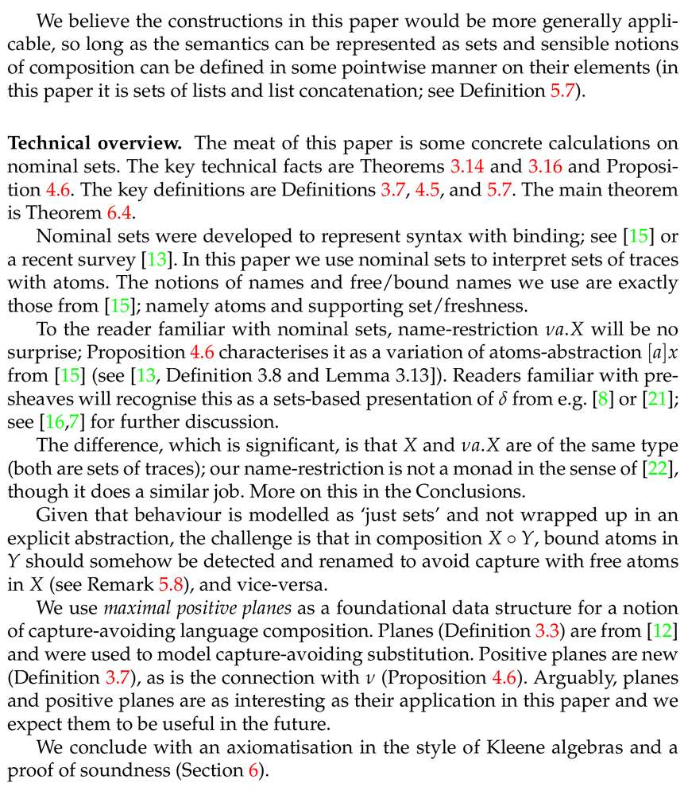
Now that you’ve aced the first few paragraphs, I suggest that you tell the reader about the specific structure of the paper to come.
- What are …
- the main theorems?
- the main definitions?
- the main technical lemmas?
- What places in the paper do you need the reader to pay particular attention to?
- Some nice tricks in the proofs?
- Something that looks like previous work, but actually improves on it or requires a new proof-method?
- Do any of the highlights relate in broad terms to previous work by you or by somebody else (this is not a full comparison with related work—just mention the highlights).
Now is no time for technical details; just give a framework to help the reader ease into the paper. The illustration shows part of a page 2. Have a look.
How to open a (sub)section
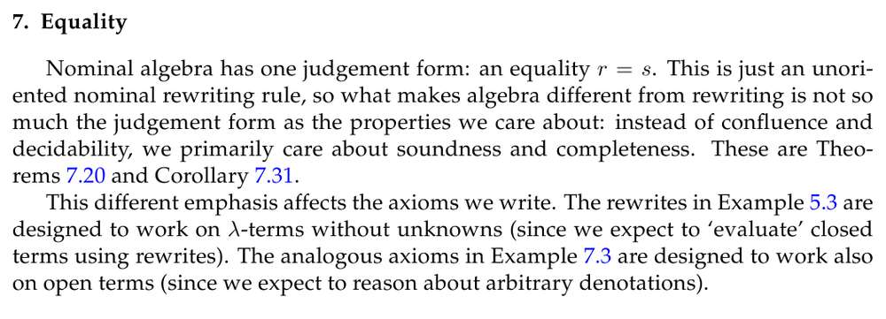
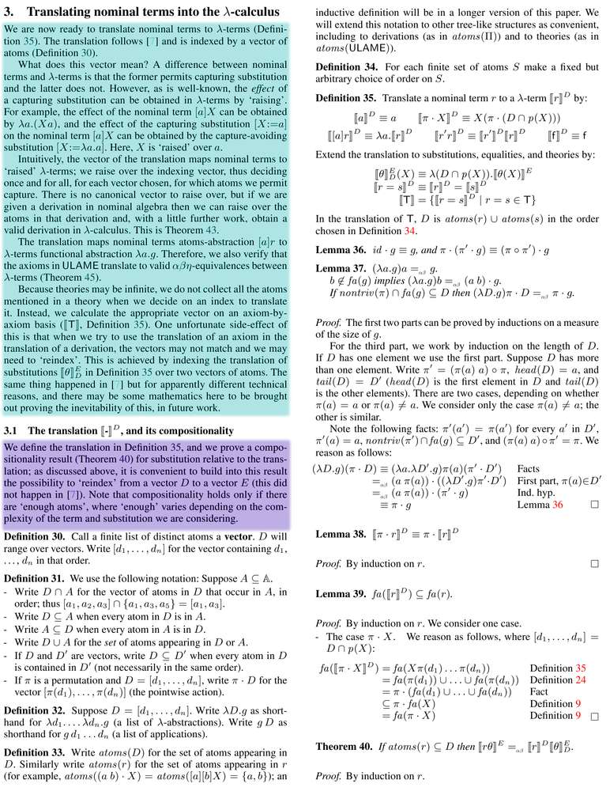
It’s just like the introduction, but perhaps with specific technical reference to what has preceded or what will follow.
The reader has landed in this part of the paper and has probably not read the paper linearly. He’s been attracted to this part of the text because the section heading created a visible break in the flow of text, and perhaps because the title of the section interested him.
Just help the reader to get oriented and find his way around. Mention what the main definitions and
theorems of this section are. At the moment I often write "The main definition is Definition X, the main results are Proposition Y and Theorem Z, which depend on technical Lemma Q"
.
I’ve slipped in a couple of recent examples, just to illustrate what I mean.
- Note how in the first example I compare and contrast equality reasoning with rewriting. This is partly because I know, from experience, that the reader will see the rewriting axioms and the equality axioms and wonder why they are so different—and partly it’s just to bind the paper together.
- In the second example, look how systematic I was. It was a technical piece of work, so I spent the best part of a column of text on exposition. The green part maps out section 3 as a whole, but then in the purple part I gave a little potted summary of subsection 3.1 too.
There are precise references to the main definitions, results, and also some brief explanation of the technical difficulties and how they influenced the structure of the paper. I don’t like this paper very much—overall it was too technical—but at least I was trying to help the reader.
The importance of good layout
I think layout is important.
- A well laid-out paper makes a more professional impression and biases the reader (and referee) towards you. A poorly laid-out paper typically makes an unprofessional impression and biases the reader (and referee) against you.
- Good layout makes it easier for the eye to navigate the page. In a complex technical document, every little helps.
- Layout is part of communicating with the reader. By laying things out in a particular way, you express non-verbally what parts of the document belong together and what parts don’t.
Here’s an example. The material is the same, but the layout has evolved (and improved).
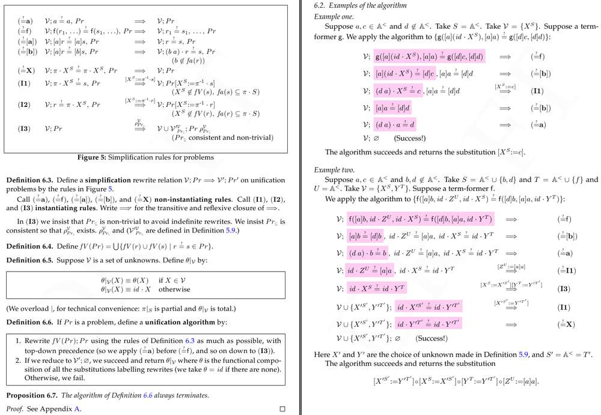
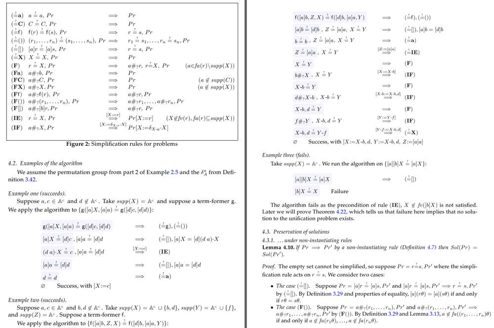
Aside from the obvious, like choice of colour and improvements in notation, note that in the second paper above I don’t line up the arrows in Figure 2 with the arrows in the examples. They don’t belong together. The examples, however, do belong together, and this is expressed by the alignment. The reader’s eye understands this and is drawn to the three examples as a unit, in a way that does not happen so much in the first paper.
It’s not much. It just helps that little extra bit. Lets look at another example:
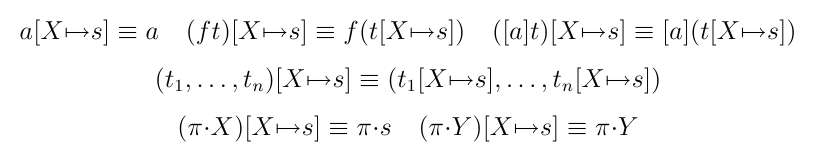
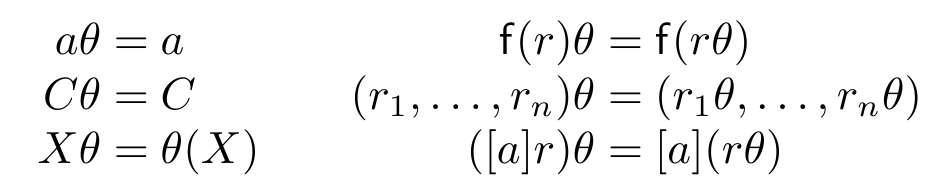
Amazing, isn’t it?
Journal vs. conference papers
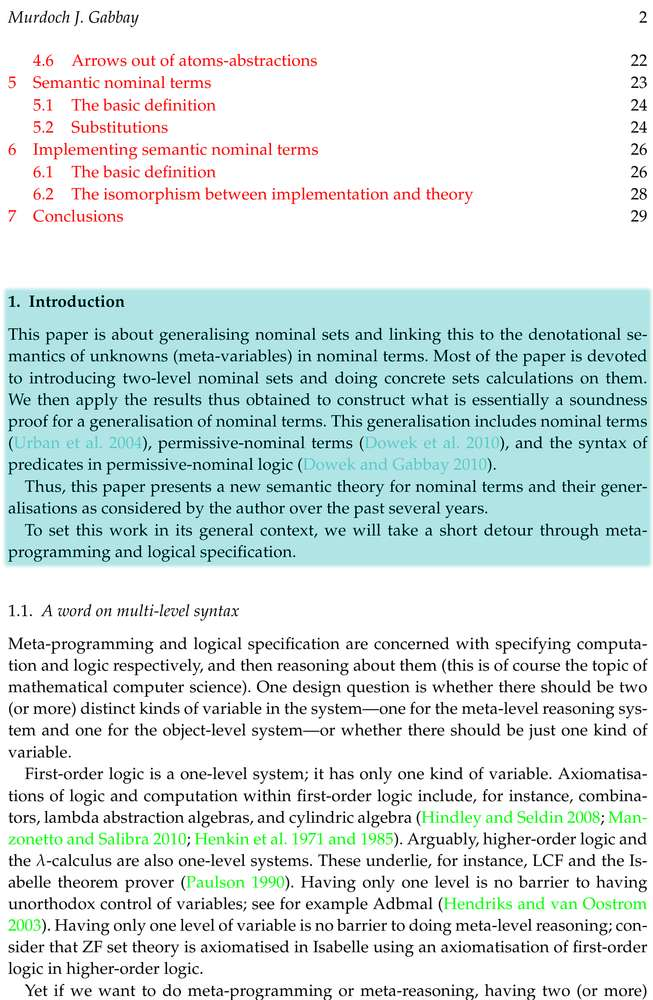
The papers mentioned so far are all conference papers. For journal papers the pressure to grab the reader’s attention is less intense.
I enjoy the challenge of writing for conferences, but I do prefer journals; there’s more space for manoeuvre and you can communicate with referees via the editor. The only disadvantage is that sometimes, a paper vanishes for 12 months and then comes back summarily rejected.
(That happened to me once: I submitted a survey paper and the journal didn’t publish surveys, but it took the editor a year to tell me. I had enough sense to stay polite, which is good because it turns out that that editor had been bereaved and really wasn’t thinking straight. But the journal should have structures in place to handle that. We’ve got real problems in academia with the way we’ve set things up—some kind of Amazon or eBay like points system for journals, might not be a bad idea.)
In Two-level nominal sets I open with a pithy paragraph (see the highlighted illustration), but there then follow several pages of discussion—you couldn’t do that in a conference paper.
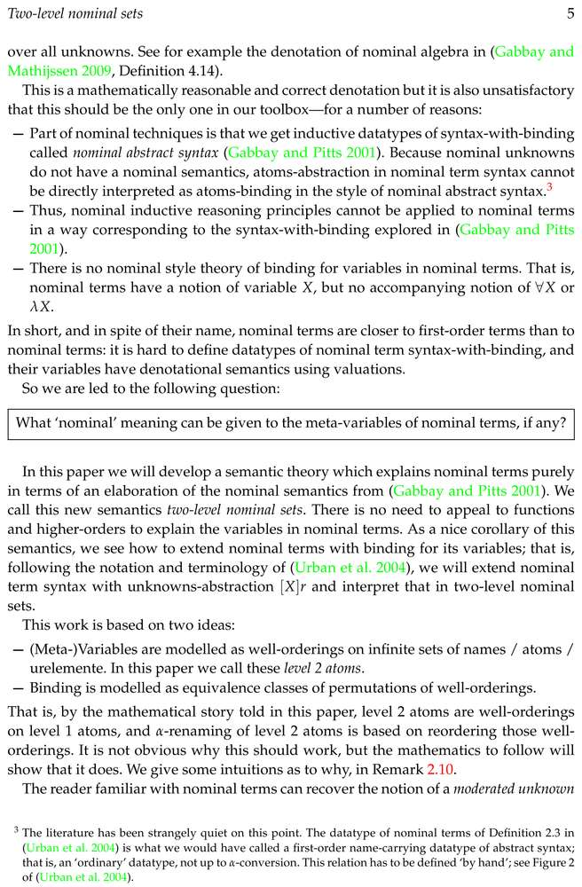
But look at page 5. I boil the whole discussion down to a single line, in a quoted box so the reader absolutely can’t miss it. Above that line, I pick holes in previous work (including my own) while giving the reader specific and mathematically precise metrics of this paper’s success. Below that line, I sum up exactly what the paper does and the two ideas underlying it.
Though I do say so myself, it’s a beautiful page. Layout, ideas, and text all come together very nicely.
Notice the footnote. I’m breaking one of my own rules: this is a direct critisism of previous work. The only mitigating factor is that I was one of the authors. I felt so strongly about this point that I had to raise it, even though I knew I was running a risk of rejection if the paper hit the wrong referee when he was feeling touchy.
You might also like to take a look at page 6. Because the introduction is so long, I condensed it down for the reader to an executive summary in Subsection 1.4.
The conclusions, and what they achieve
I personally don’t have a standard format for my conclusions. I do whatever suits the material and the space available.
Conclusions are retrospective. You’re reminding the reader what you’ve done. So:
- You can be technical in a way that you can’t be in the introduction (so describing a window here as
"a hard and tough amorphous crystalline sillicon oxide plane which combines high light transmissivity with relatively low thermal and sonic transmissivity"
is just fine). - You not only can, but you must give precise references into the body of the paper for every
technical point you raise. I want to strangle authors who write
"We have proved Widgets equal to Wombats"
. Where were these defined in your dense maths? Where?? WHERE??
My current practice is to write the introduction in the present or future tense, and the conclusions in the past or present tense.
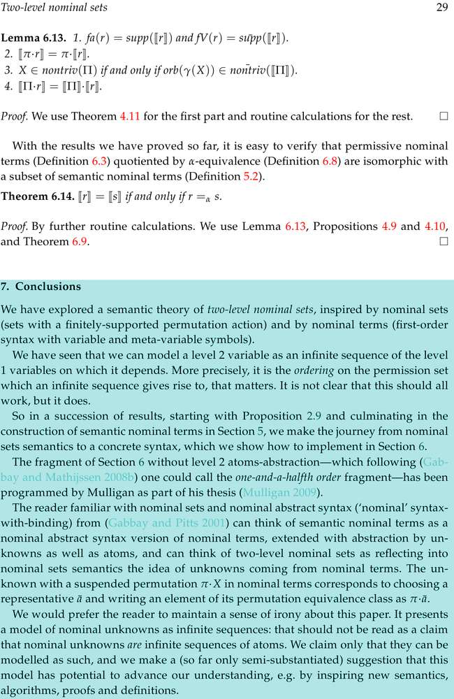
I start with a brief summary of the paper, and then segue into a discussion of significant challenges and difficulties, and/or related work. I conclude with future work. And, I put in precise references so the reader can check up on me.
(Talking about having "shown it sound and complete"
without references is OK because there was a section
called "soundness"
and another called "completeness"
. Still, precise
references might have been better.)
If there are any likely misunderstandings on technical matters that would have confused the reader in the introduction, now is a good time to head them off (also do this at the point of definition, of course). Often, you only find out about these likely misunderstandings after the paper is refereed. This might cost you a resubmission or two.
That’s another reason to prefer journals: you can get into a back-and-forth discussion with the referee which converges quicker to a fixedpoint than a sequence of conference rejections (best, of course, to just get it right first time; but one can only do ones best).
The illustrated example is a case in point. Summary, a few pointers into the text, a few nice intuitions, and heading off a potential misapprehension (and yes, that came from a previous version of the paper).
The abstract
It is often suggested that you should write the introduction, abstract, and title last. This is because you should write the introduction, title, and abstract last. By all means write them first too, perhaps to get the ideas straight in your head—just do so in anticipation of tearing it up repeatedly as the material evolves. The titles of my papers may undergo revision up until the last minute.
What happens with the abstract?
- One the paper is published, the abstract goes online and gets indexed by Google. So make sure to slip in the right keywords.
- It’s skimmed by readers trying to decide whether to read the paper.
- It’s read by editors and programme committee members when choosing referees.
Sometimes, you might want your abstract to be short and scary. An example is in the first illustration below. I sent this in to a conference and I wanted to make sure that it would go to referees who were comfortable with the material in the paper. That material was quite technical, so I needed to make sure it would be picked by a referee who enjoyed a mathematical challenge. Being a conference, space was also at a premium.
Sometimes, you might want your abstract to be long and friendly. The longest abstract I’ve ever
written is in the second illustration below. It was for a survey journal paper; it had already been
accepted so I didn’t have to worry about referees. I had plenty of space. The editor rightly asked
me to make the abstract more descriptive so I thought: "what the hell, I’ll write an essay"
. So I did, and it
worked fine.
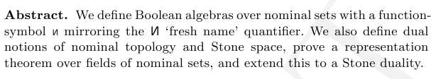
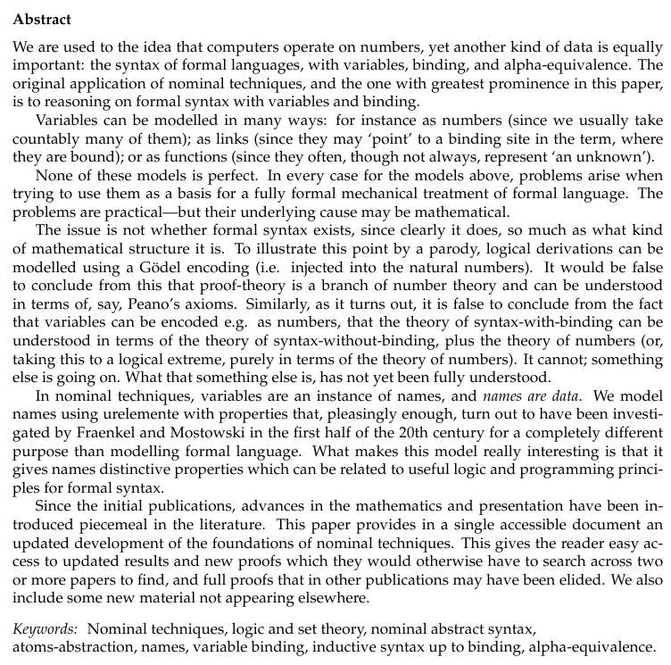
So: the abstract is like a flower. Design it to attract the right pollinators.
Choosing a title
Titles should be descriptive. Doh!
- My worst title ever: A formal calculus for informal equality with binding.
What does that tell the reader?
- An OK title: Curry-style types for nominal terms.
It does what it says on the tin.
- A long title: Two-level nominal sets and semantic nominal terms: an extension of nominal set theory for handling meta-variables.
Long, yes, but check out the use of keywords (see below).
- A zany title: One-and-a-halfth order logic.
For a while this was the most downloaded paper of the journal it was published in; not through technical excellence, I suspect, but thanks to the catchy and fascinating title.
At the moment, my titles are long (about two lines). I tend to split them up with a colon. Why? Because in this day and age of Google, papers are not taken off the shelves of libraries; they are indexed by computers. Lists of papers are not compiled and perused; they are auto-generated and skimmed.
The questions I ask myself are:
- If a potential reader does a web search for some keywords, will the title I choose be trawled up for their attention?
- If a potential reader is skimming through a very long list of paper titles, will my title tell him if he wants to read the abstract?
So the third title above would presumably show up in searches for "nominal meta-variables"
, or
"nominal terms"
, or "nominal sets"
, or "sets meta-variables"
--to all of
which this paper might be relevant. You get the idea.
I try to put as much information in the title as I possibly can. That’s just my current policy based on observing my own search behaviour at the moment. It might change.
After all, academic search tools are improving all the time, albeit from a low baseline. It’s going to get better, right?
If it’s non-trivial, then say so
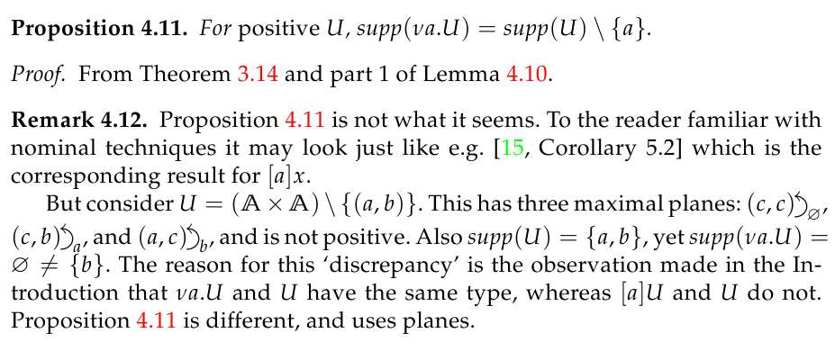
Look at Proposition 4.11 in the illustration, and Remark 4.12 immediately following it. I spend two lines on the result, and then eight lines explaining to the reader why it is not trivial.
Why?
There’s a very similar result in the literature (it’s cited in the extract). I know that the expert
reader will skim over 4.11 thinking "Oh yes, that’s just like Corollary 5.2 of [15]"
.
It isn’t; the proof is very different and it’s actually a little bit surprising that it works at all. But if I don’t say that, the reader won’t figure it out for himself, will he?
In my early days, I imagined the reader poring over every sentence of my paper, as I had. I’d have left Proposition 4.11 unadorned, to leave the reader the pleasure of figuring out for himself the sublime difference from Corollary 5.2. That flattering illusion didn’t last long: all my papers just got rejected.
This is very easy to get wrong. You spend half a year with your nose jammed up against a theorem, and you lose track of …
- … what parts are obvious,
- what parts are not obvious, and
- (most treacherous of all) what parts look obvious to the casual reader but actually aren’t obvious at all.
If there’s something in your paper that looks simple, but isn’t—then say so. Explain it in the introduction or conclusions and also discuss it at the appropriate point in the paper.
If you don’t, the reader won’t know it’s there.
Comparing with other people’s work
At some point, you’re going to have to mention previous work. Maybe you wrote that previous work, maybe somebody else did. Here’s what not to do:
Professors X and Y’s work on Widgets was clunky [X&Y2001]. They’ve repeatedly tried to improve [X&Y2003,2004,2007] — and just as repeatedly, they failed. The syntax is obscure, the semantics uninformative, and basically the whole thing is a mess.
My Widgets on the other hand are clean, elegant, and mathematically well-motivated.
There’s lots wrong with this.
- Professors X and Y won’t like this description of their work, and you’ll pay for this later. Being right is bad because you rubbed their noses in it, and being wrong may or may not be worse.
- The text is full of negatives.
- Having alienated X and Y, you cite their papers extensively (look: four citations). This means that
when your paper goes in the system the committee member in charge of picking referees will see those
references. He won’t read the paper, he’ll just think
"Ah. I see the author cites X and Y. I’ve heard of them and they’re expert in this field. I’ll send this paper to them!"
Talk about asking to get kicked in the balls. - Also, the critisism of X and Y’s work is vague. There are no concrete details.
Let’s try this again:
Professors X and Y laid the groundwork for this field in [X&Y2001] and developed it further in [X&Y2003,2004,2007].
This paper improves on that state of the art by giving Widgets a new mathematical semantics (Definition Z below; essentially, a translation to Wombats), which can be proved sound and complete (Theorem Q).
Note that following X and Y’s approach Theorem Q fails because there is not necessarily a 1-1 correspondence between Widgets and Wombats. Theorem Q works for us, because Definition Z imposes an apparently innocuous but actually very important extra condition (compare Definition Z with Definition P of [X&2001]). This restricts our Widgets just enough to make Theorem Q work. Having said that, the two approaches remain very much in the same spirit.
There. Now you’re happy, the reader’s happy, and Professors X and Y … well, they may or may not be happy, but at least it’s all about the maths and you’ve given the reader honest evidence for your position.
Look at it from the point of view of Professors X and Y (who, perhaps, had good reason for setting things up as they did and see the subsequent developments very differently). God willing you’ll be in their position one day, if you’re not already. It’s no fun seeing some smug little bastard who doesn’t understand what he’s talking about trashing your work in public.
This is not just for the humiliation of it, but also for the crushing sense of despair that for all that hard work—people still don’t understand what you wrote. So be nice and try to talk to everybody concerned.
But, I digress.
Some traps to watch out for
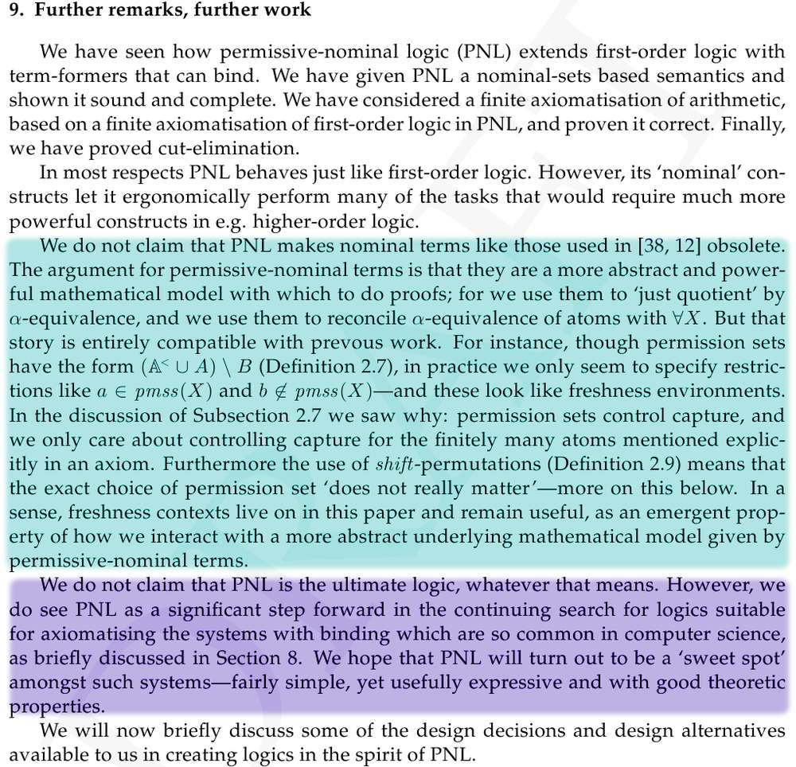
A few rules of thumb:
- If you’ve built a model X of a phenomenon Y, then the reader will assume you claim that X=Y, even if you don’t.
So you’ll get referees saying "this is clearly wrong, because Y has properties that X does not"
(but you never intended to model all of Y,
only the bits you’re interested in). You’ll get referees saying "X just isn’t equal to Y"
, or
"How dare this stupid author claim that we don’t need Y?"
.
So I tend to conclude by saying something like "I’ve just built a model of Y. There are bits missing, and I’m not claiming that X=Y. Nevertheless, by studying X we can better understand Y, because of Theorem Q"
.
- If you’ve built X and Professor U built Y, then the reader will assume you claim that X replaces Y, even if you don’t.
So if possible I conclude by adding "… and I don’t claim that X necessarily replaces Y. X has the following advantages … but Y is easier to read / shorter / more flexible / less flexible (delete as appropriate)"
.
I don’t mean to be cynical here. We can’t see the future, so try to play to all sides of the audience wherever mathematically possible.
You never know; your next paper might contradict this one. Then you’ll look pretty silly if you said
(as I see people writing, without substantiation) "This author is absolutely definitely sure that what he is doing is absolutely right"
. Explain your reasons
and allow the reader to draw his own conclusions.
- If it looks easy, people will assume it is easy.
I covered this one above. If you don’t explain where the hard bits are then the
reader will assume that there aren’t any. It’s not a matter of bragging; you just need to tell the
reader the plot. So I end up writing something like "It is not evident that Widgets should equal Wombats, and Definitions X and Y require some careful mathematical design"
, or
"Most of the cleverness is in getting Definitions X and Y right"
.
The importance (and frustrations) of coauthors
I have found that my papers are generally better for being written with coauthors. Even if the coauthor doesn’t do much, having somebody to talk to makes a huge difference.
My advice is: find good coauthors and treasure them, and if you can’t, then find bad ones and be grateful for what you’ve got! Don’t worry if you end up doing all the work: what matters is producing the best document you can. Two people are better than one, at this game.
If a coauthor is slow, as is often the case, then chase him up politely. I call this a
"standard pester"
.
Dear Professor X,
This is a standard pester, just to make sure I stay near the top of your stack. You were going to spend five minutes looking at two weeks of intense effort on my part. Please remember to do this as soon as possible.
One week later:
Dear Professor X,
This is another standard pester, just to make sure I stay near the top of your stack. You were going to spend five minutes looking at two weeks of intense effort on my part that I sent you last week. Do you have any idea when you’ll be able to do this?
Next month:
Dear Professor X,
This is a standard pester. You were going to spend five minutes looking at two weeks of intense effort on my part that I sent you a month ago. Do you have any idea when you’ll be able to do this? Have you finally keeled over and they can’t resuscitate you this time? [just kidding -mjg]
Remember that the submission deadline is rapidly drawing closer so I really need you to get on this now, or we’ll miss it.
Rules of thumb:
- If there’s a deadline, say so. Professor X may well have forgotten.
- Don’t be afraid to press the issue. You’re a team working towards a goal. This isn’t about you, it’s about getting the job done. He’ll understand that.
- Don’t let the situation get bad (and then say
"Well I told you: Didn’t you read paragraphs 3 and 5 of my e-mail of four months ago?"
). If something really terminal is about to happen, then clearly alert Professor X to this and spell out the consequences of failure to get on with it.
If a couple of e-mails don’t do the trick, pick up the phone.
Sometimes, you just have to deal with difficult characters. I had one coauthor who I knew from experience would procrastinate. I set a deadline and when he missed it I removed his name from the paper and told him I’d done it. Tee hee, that made him sit up. He needed publications so that really got his attention.
I had one coauthor who disappeared for a year. No reply to e-mail. No answer to phone or messages. I
couldn’t finish the paper without him, so I was just stuck. I bumped into him in a conference and
asked "Look, I’m really sorry for whatever I did to offend you, but what did I do or say to drive you away?"
. He replied "Oh no, you didn’t offend me. I just got busy."
I finished the paper with him,
got it published … and (quite rationally) chose to work with coauthors other than him thenceforth.
But we did finish the paper, and it was better for his participation!
I don’t mind the nonsense above. But I’ll tell you what does annoy me. A coauthor who vanishes, doesn’t respond to e-mail, lets me painstakingly polish a paper to publishable standard all on my own, and then suddenly reappears perhaps a week before the submission deadline and starts tearing into the paper.
I hate that. What a lack of consideration! Polishing a text is hard work: forcing your coauthor to do it twice (once on his own, once with you) is either self-centred, or a power-trip at my expense. Yet even so, when this happened to me the paper ended up better for the second pair of eyes on it. I considered carefully whether to work with the person concerned again (to their subsequent detriment, I like to think), but after we had finished the paper.
I’ve twice got involved with coauthors that were just a waste of time. One was an idiot, the other
couldn’t be arsed. If this happens to you then I suggest that you leave their name on that paper (if
it ever gets published). If you don’t then you’ll spend the rest of your life looking over your
shoulder, terrified for the comeback: "Did this paper get rejected because X was on the programme committee and he hates me?"
.
Grin, be polite, chalk it up to experience, perhaps hold back a bit on the results, and later on write another and a better paper without them.
Who does the work?
If you are reading this guide for help with your own work, then probably that would be you.
Whoever is the junior partner in a collaboration will typically do most of the legwork (writing out / checking details of theorems, trying out design options, etc).
It’s not a hierarchical thing: it’s a matter of who is
- most desperate,
- least productive, and
- has the fewest distractions.
Junior people typically satisfy a, b, and c, whereas senior people typically don’t. Junior people also typically need to work ten times as hard to get the same results (if they’re lucky) because they lack overview, technique, and experience, so a senior partner can pay for himself many times by providing ideas, guidance, advice, and knowledge of how to present the material to a broader audience.
Everybody brings expertise to the partnership. Everybody is equal. But, if you’re junior and you really want that paper, then be prepared to sweat for it. Conversely if you are junior and your senior co-author is putting in most of the hours, then ask yourself what is in it for him and … will he work with you next time? Just a thought.
Productivity grows with practice. Personally, I relish the opportunity to do most of the work. It gives me a deeper understanding of the underlying maths, which I can then bring to the next paper. So if your coauthor leaves you in the lurch then remember … there are no problems, only opportunities!
What order to list authors?
My advice: alphabetic order. No egos = no complications.
You think that your contribution was most valuable? What if your coauthor disagrees (bear in mind
that he might not say this to you, and you might suffer for it only later)? Do you argue over this?
No. Keep it simple. If it wasn’t worth changing your name to "Aarnon, Aliyah"
, then that’s
your fault and it’s not worth losing a collaboration over it now.
Conversely, if your coauthor is determined to have a particular order, let him have it. Avoid direct conflict. What matters most is who develops the material later; the issue here is not position but velocity. If such a disagreement does arise, then your coauthor is insecure about his contribution—and that suggests you may overtake him later. Anyway if you’re arguing about priority then there are probably deeper problems with your relationship.
Weigh up whether you want or need to write another paper with him. Give him what he wants today, and get out.
You are not your reader
We project ourselves onto other people; I tend to assume that you’re just like me — and you tend to assume that I am just like you. It’s only human.
When people forget this they can get very annoyed. "Why don’t they understand? The only possibilities are idiocy or deliberate malice!"
Wars have been fought, and many books written. Let me try to discuss briefly how this phenomenon affects academic communication.
Your reader is not equal to you.
As an author of an academic paper you are somebody who loves the material, or at least has laboured intensely to create it. You will be tempted to tell your reader how hard it was to do this; all the false leads; also all the limitations. You will tend to assume that:
- Your reader understands the issues involved, and cares.
- Your reader understands, feels empathy for, and respects for your opinions, values, and sensibilities.
- Because something was easy and obvious for you, it is easy and obvious for the reader; and what was challenging for you is of interest to the reader.
- Your reader is already aware of your other papers, the overall shape of your research, and the underlying motivations for that work.
At least, you will tend to assume this if you are just like me.
But no. Even for close colleagues, this is usually not the case. What was obvious for you may be a revalation to the reader if you are lucky, or perverse if you are not. Significant distinctions to you may (rightly or wrongly) seem minor details to the reader—conversely, the reader may be fascinated by what seems a minor curiosity to you.
As for awareness of research context, your other papers, and the underlying motivations—only if you tell him, and if your reader has any prior awareness of these things it may be very different from yours.
Most likely, your reader just wants to get the idea: "what is in this maths for me?"
. Or, your reader will
be after a specific piece of information: "does he encounter problem X which I’m familiar with, and if so how does he solve it?"
; "what’s his syntax?"
;
"does he use Widgets or Wombats?"
; "can he model Y, Z, and U?"
. Once these questions are answered, if you’re
lucky, some very few readers may go beyond that.
Your reader may be a future version of you, by the way. It’s amazing how quickly one can forget the minutiae of the material, so by writing a good, clean document you are also helping your future self.
Let me give you a real-life example. A PhD student asked to give a 30 minute lunchtime seminar spent
most of it describing the technical limitations of his work. At the 20 minute mark I interrupted
him: "But the overview of your work is this, correct?"
(I had extracted it from the 20 minutes of technical data; it took me
about 30 seconds to sum up). "Yes"
, he replied, "that’s right"
.
"That’s an incredible achievement, you know"
, I said encouragingly. He was stunned and silent.
My point is not about PhD students giving bad talks. My point is that this PhD student had spent 20 minutes talking to himself. He was a modest, sweet man, very involved in his work, aware of his own shortcomings and deeply concerned about getting stuff just right—so he projected this onto his audience and spoke accordingly. I intruded with a different point of view, which he had not considered, and he was surprised.
Your readers are a strange, amazing, alien species. Get out there and get to know them.
One paragraph = one idea
One paragraph = one idea. Make sure that idea is clear from the first couple of sentences of the paragraph. Do not introduce the central idea of a paragraph sandwiched in the middle of the text.
It’s very simple. For every paragraph in your paper ask yourself: what is the point of this paragraph and is that point clear? If not, then why is that text sitting there?
If you find yourself writing a really long paragraph that does not naturally split in two, then odds are you’re really writing an itemised list.
I could go online and find you a dozen great examples of how not to do it, but I promised to slag off only my own work so I’ll try to rewrite the text above as I wouldn’t normally do it. This goes against every fibre of my being __…
- Paragraphs are one of the units of good technical writing, along with words, sentences, and sections. People often get them wrong, and I get papers with long rambling paragraphs that desperately need cut up. The purpose of a paragraph is to contain a single idea, so for every paragraph ask yourself: what is the point of this paragraph and is that point clear? Thus, you will improve your text and make it more readable.
If you feel your text belongs in a single unit, and that unit seems long, then you’re probably writing an itemised list.
Each sentence in the excerpt above is reasonable, but they are assembled into a bad paragraph. I take three sentences to get to the point, and than ramble on. You can easily lose your reader with this, before you even get to the hard maths.
On the importance of editing
If your text is lively, direct, straightforward, engages the reader and does not waste their time, then your text is more likely to be favourably refereed and once published is far more likely to be read and cited.
It’s not rocket science: the clearer your text, the clearer your point will be and the more clear it
will be to your reader that they have achieved clarity in understanding your work. And yes, I did
use the root "clear"
four times in that last sentence; that was deliberate.
There is plenty of just plain bad writing out there, but it can also be quite subtle. Poorly-edited text does not necessarily look dreadful. Consider:
Not necessarily bad…
"The full application of permission sets will become clear in due course. We can drop a few hints now:"
… but this is shorter and means the same thing
"Some preliminary comments on permission sets:"
The cumulative effect of awkward phrasing, unnecessary circumlocutions, and waffle, can sap a reader’s energy and enthusiasm. Don’t do it.
As a writer, I may imagine myself trying to impress a girl (or lady) at a party, or speaking with a new colleague in the common room. Do I sound smart, or do I sound like I’m trying to sound smart? Am I making sense, or am I nervous and droning on a bit? Are my reader’s eyes glazing over? If I get it wrong, my reader might give up and find another source to read (and cite).
Note that technical text is not necessarily like normal prose. You’re not writing a novel and you don’t get points for smart language. It’s much more like journalism than fiction.
I note that in many continental languages, it is considered good style to write complex sentences
(lots of "the former"
and "the latter"
, and paragraph-long sentences). I
suspect this is descended from Latin. I tell foreigners this is not good English and am universally
ignored. I try to be understanding: their whole culture is at odds with me.
Examples of fine English style are Mark Twain (I haven’t read his fiction but I adore his essays) or that great English essayist George Orwell. For a logician, try reading anything by Paul Halmos; his clarity is amazing.
Miscellaneous words
A few random things that dropped out of my fortune cookies:
- Academia is a marathon. You have to keep moving. It doesn’t matter if you write ten pages in a day, or just one line, so long as you’re always making progress.
- Keep a bundle of things you’re working on, keep them under control, and keep them all moving. I’m
inspired here by Toyota’s philosophy of
"continuous improvement"
(Kaizen). Significant change is achieved by accreting many slight improvements, or to quote Tesco’s brilliantly catchy tag-line:"every little helps"
. - Deal with things today rather than tomorrow. Respond quickly to coauthors (remember; you’re lucky to have them, and you need them). Try to ensure that your coauthors know that they are expected to respond quickly to you.
- If you meet somebody and have a nice chat about maths, say
"thank you"
. You are lucky that somebody paid you some attention in their busy lives. Be grateful. - Keep an eye on what other people are doing. If you have colleagues working on similar stuff, make sure to visit their webpages every so often (especially just before submitting a paper that might be relevant to them). If what you’re doing is relevant to them, try to make sure they know you’re doing it.
- Talk to people. Collaborate. Don’t keep them waiting or if you must, give clear statements of when you expect to do work, and stick to them.
- If you can, keep working and have fun. If you can’t — then just keep working anyway.
What it’s all about
This is about publishing clear text that people
- can read,
- will want to read, and
- will be better for having read.
Your papers won’t go stale, they won’t corrode, and thanks to the internet they’ll stay online until the end of civilisation—and, hopefully, until long after you and I are gone.
Get it right, and through your papers you might have the opportunity and privilege of being a colleague, a guide, and perhaps even a friend and inspiration to people you’ve never met.
That’s worth a bit of work.